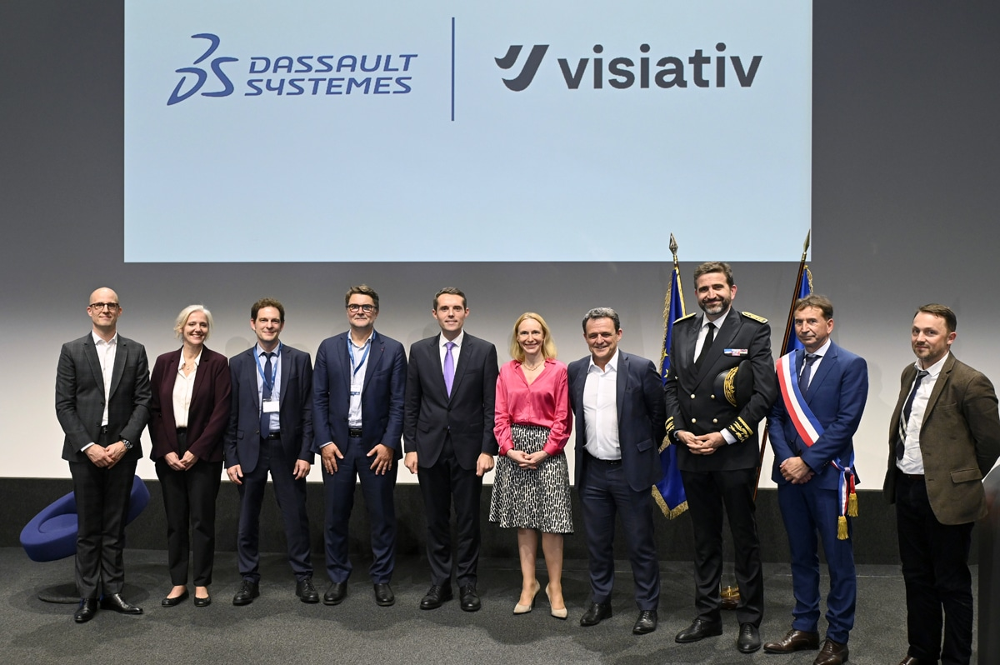

Le trio Bpifrance, Dassault Systèmes et Visiativ propulse 25 nouvelles entreprises vers l'industrie 4.0
Adaptation de communiqué par O. Héniel · Publié le 26 06 2026

Dassault et Visiativ en 2024 déjà en partenariat pour l'éducation aux métiers de l'industrie du futur. Source : Visiativ
L'intelligence artificielle n'est plus une simple promesse technologique, elle s'impose désormais comme un levier de compétitivité incontournable pour le tissu industriel français. C'est fort de ce constat que Bpifrance, Dassault Systèmes et Visiativ ont annoncé le lancement de la deuxième promotion de leur "Accélérateur IA & Industrie". Ce programme d'excellence, qui s'étalera sur dix-huit mois, a pour ambition d'accompagner très concrètement vingt-cinq PME et ETI dans l'intégration de l'IA au cœur de leurs processus.
Pour mener à bien cette mission, le programme s'appuie sur la complémentarité de ses trois fondateurs. Bpifrance, qui a déjà accéléré plus de 5 500 entreprises depuis 2015, apporte son ingénierie financière et la puissance de son réseau. Matthieu Heslouin, Directeur Exécutif de Bpifrance Conseil, rappelle d'ailleurs que l'objectif premier de cette alliance est de permettre un véritable passage à l'échelle pour ces entreprises, en combinant le financement, l'apport technologique et la présence sur le terrain pour s'adapter à la maturité de chacune.
Cet apport technologique est notamment garanti par Dassault Systèmes. Le leader mondial du jumeau numérique met à disposition son savoir-faire et sa plateforme 3DEXPERIENCE. Comme le souligne Stéphane Degraeve, Managing Director Eurowest chez Dassault Systèmes, l'industrie entre dans une nouvelle ère où la performance se jauge à la capacité d'exploiter les savoir-faire accumulés. Après quarante ans à bâtir ce patrimoine industriel avec ses clients, l'éditeur voit aujourd'hui dans l'intelligence artificielle le moyen d'en révéler toute la valeur.
Enfin, Visiativ vient compléter ce dispositif en apportant son expertise de la transformation digitale de proximité. Pour Guillaume Anelli, Directeur Exécutif de Visiativ, l'enjeu est clair : il faut aider les industriels à passer de l'intention à l'action. Fort d'un ancrage territorial solide, Visiativ s'assure d'identifier les cas d'usage les plus pertinents et de garantir un déploiement pragmatique, parfaitement ancré dans les réalités des PME.
Les vingt-cinq entreprises sélectionnées pour cette nouvelle édition illustrent parfaitement la diversité de l'industrie nationale, allant de l'aéronautique à la santé, en passant par l'agroalimentaire et l'énergie. Affichant un chiffre d'affaires médian de 34 millions d'euros, ces structures présentent un rapport à l'IA très hétérogène. Si certaines en sont encore au stade de la sensibilisation, près de la moitié d'entre elles déploient déjà des projets concrets. Cette diversité est une volonté assumée du programme afin de créer des synergies et des partages d'expériences fructueux entre des dirigeants venant de toute la France.
Pour répondre aux défis spécifiques de chaque participant, l'Accélérateur déploie un accompagnement hybride et intensif. Loin des formations purement théoriques, le parcours s'articule d'abord autour de trente-huit jours de conseil sur-mesure. Les équipes dirigeantes bénéficient ainsi d'un diagnostic à 360 degrés de leur maturité data et d'une préqualification de leurs besoins. L'objectif final est de co-construire une feuille de route stratégique, puis de prioriser et de déployer rapidement les solutions offrant le meilleur retour sur investissement.
En parallèle, le programme mise sur l'intelligence collective et l'immersion. Le cursus intègre dix journées de formation thématiques animées par des experts des trois entités partenaires. On y aborde aussi bien la vision prospective de l'IA et l'éthique que la transformation des processus et la robotique. Ce socle de connaissances est enrichi par quatorze heures de modules en ligne via Bpifrance Université. Surtout, les dirigeants sont plongés au cœur de l'écosystème de l'innovation à travers des rencontres directes avec des fournisseurs de solutions et des visites d'usines inspirantes. Une démarche globale et immersive, conçue pour transformer l'intelligence artificielle en un véritable moteur de l'industrie française.